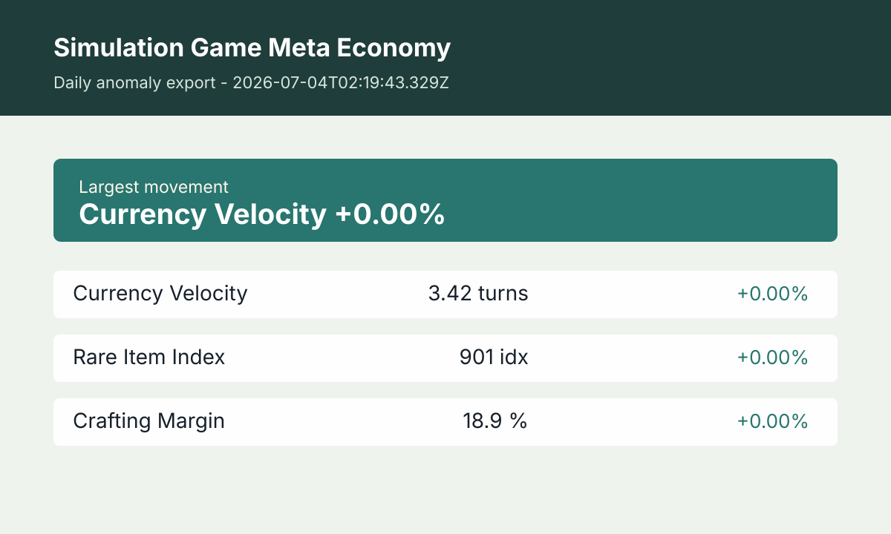

Current read
Simulation game economies can shift quickly when player behavior, crafting costs, event rewards, or rare item demand change at the same time. This tracker explains the health of a game economy in practical terms for players, community builders, and creators who follow market balance.
The latest update was built at 2026-07-02T19:29:26.361Z. The current metric set is Currency Velocity: 3.42 turns; Rare Item Index: 901 idx; Crafting Margin: 18.9 %. Currency Velocity is the lead movement at +0.00% from the previous reading. This page is designed as a daily reference for readers who want the context behind the numbers, not just a thin quote table.
How to read this tracker
Read currency velocity first because it shows how quickly money is moving through the simulated economy. Compare that with the rare item index and crafting margin. High velocity with high rare item prices can signal speculation. High crafting margins can signal a temporary profitable loop, but only if input supply remains available.
- Currency Velocity: How fast in-game currency appears to circulate. Higher readings can mean active trading, inflation pressure, or event-driven churn.
- Rare Item Index: A directional index for scarce items that often move before broader player sentiment is obvious.
- Crafting Margin: The difference between expected crafted output value and input cost. It helps identify whether a crafting path is attractive or crowded.
Editorial method
The tracker keeps each metric stable across updates and converts the movement into a simple anomaly note. The editorial goal is to explain possible player behavior behind the numbers: hoarding, event farming, crafting pressure, or demand for status items.
Game economies depend on patches, developer changes, exploits, and community behavior. This page should be used as a context dashboard, not as a guarantee that a strategy will work in every server, league, season, or title.
Frequently asked questions
Who is this for?
It is for players and analysts who want to understand why a meta-economy feels expensive, cheap, active, or stagnant instead of only reacting to social chatter.
Can this predict a patch?
No. It can show market stress that sometimes follows patches or events, but it cannot know developer decisions before they happen.
Why not track every item?
A smaller stable basket is easier to compare over time. Tracking every item can create noise and make the page less useful for readers trying to understand the economy as a whole.